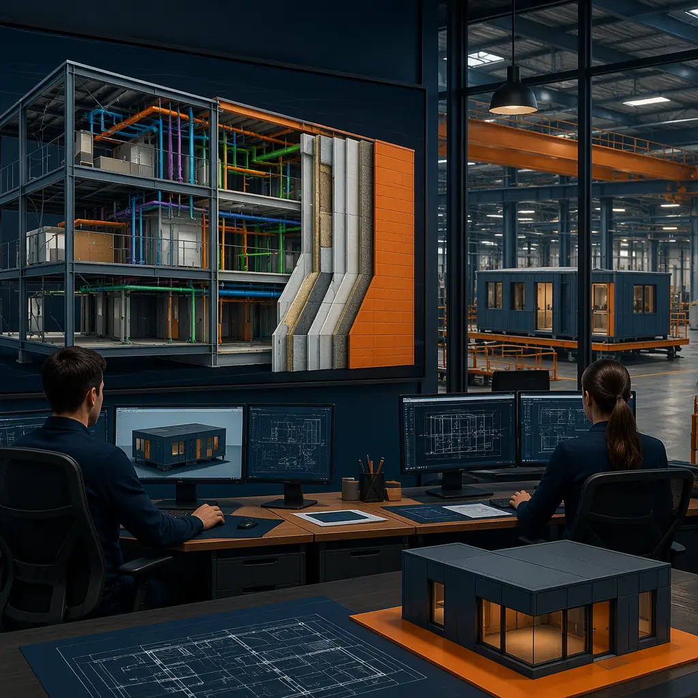
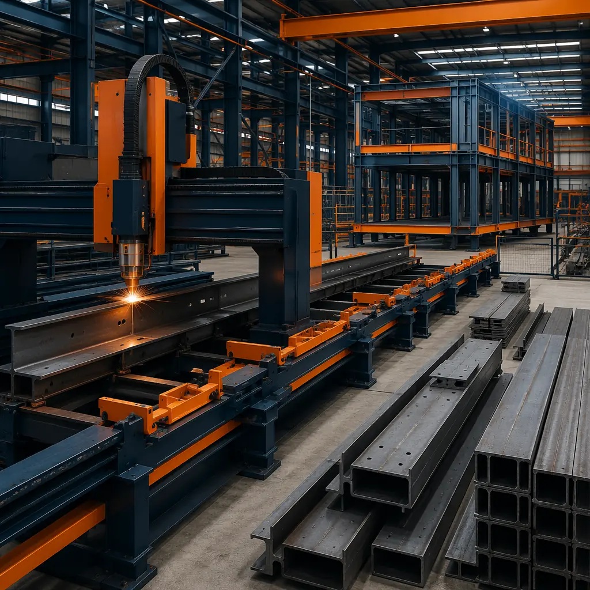

The gap between what architects design and what contractors build has plagued construction for centuries. In traditional site-built projects, dimensional tolerances of ±10mm are considered acceptable for structural elements, and ±25mm is not uncommon for partition walls and finishes. These tolerances cascade: a 10mm deviation in a steel column position becomes a 15mm gap at the facade connection, which becomes a 20mm variance in interior dimensions that field crews must absorb with shims, caulk, and trim — all of which add cost, schedule, and embodied carbon. Modular construction eliminates this design-construction gap through BIM-to-factory digital workflows: a continuous digital thread from architect's model to factory CNC machine that achieves ±2mm dimensional precision, catches clashes before a single piece of steel is cut, and reduces on-site rework by over 90%.

The Design-Construction Gap: Why Traditional Tolerances Are So Wide
In traditional construction, the design-to-construction workflow is fundamentally discontinuous. An architect produces a Revit or ArchiCAD model at LOD 300 (detailed design). This model is exported as 2D drawings in PDF format. A structural engineer interprets these drawings and produces separate shop drawings. A steel fabricator interprets the shop drawings and manually programs their CNC equipment. At each translation step, information is lost, reinterpreted, or approximated. The cumulative effect is what the industry calls the "digital gap": the BIM model that exists at design completion bears only approximate resemblance to the physical building that gets constructed.
This gap has real consequences. McKinsey's 2024 construction productivity study found that 30% of construction work is rework — correcting errors caused by dimensional mismatches, undocumented field changes, and trade coordination failures. On a $20 million traditional project, $6 million is spent fixing things that should have been right the first time. This rework consumes materials (embodied carbon), extends schedules (financing cost), and erodes margins for contractors and developers alike.
Modular construction breaks this chain by eliminating the PDF-and-interpret step entirely. The architect's BIM model is exported directly to the factory's manufacturing execution system (MES) as machine-readable data, not human-readable drawings. The steel cutting CNC reads coordinates from the model; the wall panel assembly jig is set from the model; the MEP rough-in positions are derived from the model. As we documented in our design flexibility analysis, this direct digital connection means that design customization — which traditional methods penalize with complexity premiums — carries no additional production cost in modular construction.
The BIM-to-Factory Pipeline: Five Stages
Stage 1: LOD 400 Fabrication Model
Traditional design stops at LOD 300: geometry, dimensions, and material specifications sufficient for permitting and bidding. Modular construction requires LOD 400: a fabrication-ready model where every steel stud, gypsum board sheet, electrical conduit, and plumbing pipe is modeled with exact dimensions, connection details, and installation sequence. This level of detail is not extra work for the architect — it's the same information that a traditional project would eventually generate across dozens of subcontractor shop drawings, just produced earlier and centrally coordinated.
The LOD 400 model serves as the single source of truth for the entire project. Any change to a window dimension automatically propagates to the wall opening, the facade panel, the structural framing around the opening, and the MEP that routes past it — all before a single component is fabricated. This is fundamentally different from traditional coordination, where a window change in week 8 of construction triggers RFIs to the facade contractor, structural engineer, and MEP subcontractor, each of whom must assess impact and respond — a process that routinely takes 2-4 weeks and costs $15,000-50,000 per change order.

Stage 2: Automated Clash Detection and Resolution
In traditional construction, clash detection happens when two subcontractors discover their work occupies the same physical space — typically during installation, when the cost to resolve the clash is highest. The industry euphemism is "field coordination," but the reality is hasty phone calls, improvised solutions, and compromised design intent.
In the BIM-to-factory pipeline, clash detection runs automatically against the LOD 400 model before fabrication. The software identifies every geometric conflict: a duct passing through a beam, a conduit interfering with a window frame, a plumbing riser conflicting with a structural connection. Each clash is flagged with a severity rating (hard clash vs soft clearance violation), and resolution options are generated parametrically — reroute the duct, notch the beam (with engineering approval), or adjust the module layout. A typical mid-rise modular building of 100 modules generates 200-400 clash flags in first-pass automated detection; all are resolved in the model before any steel is cut.
For comparison, a traditional project of equivalent size generates approximately 150-250 field clashes that are discovered during construction, each costing an average of $3,200 to resolve (National Institute of Building Sciences, 2025 data). Eliminating these field clashes through automated model-based detection saves $480,000-800,000 on a $20 million project — a 2.4-4.0% direct cost reduction from clash avoidance alone, before accounting for the schedule savings of avoiding rework delays.
Stage 3: CNC-Driven Fabrication
The validated LOD 400 model is exported to the factory's manufacturing execution system. For steel frame production, this means the CNC beam line reads cut lengths, hole positions, and welding points directly from the model. For wall panel assembly, the automated framing table positions studs and tracks according to model coordinates. For MEP rough-in, conduit and pipe routing is projected onto the module frame using laser guidance systems, showing installers exactly where each component goes.
The precision achieved through CNC-driven fabrication is transformative: ±2mm on structural steel dimensions, ±1mm on MEP rough-in positions. This precision means that when two modules are connected on site, their structural connections align perfectly, their MEP connections mate without field modification, and their interior finishes meet at clean, consistent joints. The site assembly phase becomes an assembly operation rather than a construction project — a distinction that our comparison of modular and traditional methods documents with project data from 18 countries.

Stage 4: Digital Twin Quality Control
Every module produced in a MODURA factory generates a digital twin: a 3D point cloud captured at completion that is overlaid on the LOD 400 fabrication model to verify dimensional conformance. Laser scanners mounted on factory gantries capture 2 million measurement points per module, producing a deviation map that identifies any variance from the model greater than ±2mm. Modules that pass are certified for shipping; modules with deviations are flagged for rework before they leave the factory — not after they arrive on site, where rework costs 5-10× more.
This digital twin serves multiple purposes beyond QC. It provides the developer with an as-built record more accurate than any traditional survey. It supports facilities management by providing exact locations of MEP components behind walls. And it creates a feedback loop that continuously improves the fabrication model: if 50 modules show a consistent 1.5mm deviation at a particular connection, the model is adjusted to compensate, and the next 50 modules are produced to an even tighter tolerance. This is the same continuous improvement methodology that transformed automotive manufacturing quality in the 1980s, applied to construction.
Stage 5: Site Assembly with Model Guidance
The digital thread doesn't end at the factory gate. Site assembly crews receive tablet-based digital assembly instructions derived from the same LOD 400 model. Each module's position on the foundation is marked with GPS-guided layout, not string lines and tape measures. Module-to-module connections are specified with torque values from the structural engineer's model, not field judgment. MEP connections between modules follow a step-by-step digital sequence that accounts for the exact order of module placement — connect chilled water header B at module joint 4-5 before placing module 6, because access is lost afterward.
This model-guided assembly reduces site labor hours by approximately 40% compared to traditional modular installation methods, and by 65-70% compared to traditional site-built construction. The speed advantage is not just about working faster — it's about working with instructions that eliminate the hesitation, double-checking, and rework that consume site labor in traditional projects. For projects with constrained site access or limited skilled labor availability, this labor efficiency can be the deciding factor in project feasibility, as we've seen in our remote workforce housing projects where site labor is scarce and expensive.
The ROI of BIM-to-Factory Integration
| ROI Factor | Traditional Site-Built | BIM-to-Factory Modular | Impact |
|---|---|---|---|
| Clash-related rework cost (% of project) | 2.4–4.0% | <0.3% | -90% |
| Dimensional variance (structural) | ±10mm | ±2mm | 5× improvement |
| Change order processing time | 2–4 weeks | 24–48 hours | -90% |
| Site labor hours (assembly) | Baseline | -65–70% | Substantial |
| As-built documentation accuracy | Approximate (redlines) | Millimeter-accurate digital twin | Transformational |
| Material waste (% of total) | 10–15% | 2–4% | -75% |
These figures are derived from MODURA's project data across 500+ buildings. The ROI is not theoretical — it's measured across our portfolio and validated by third-party project audits. For developers evaluating modular versus traditional construction, we recommend including BIM-to-factory integration as a line item in the cost-benefit analysis: the upfront investment in LOD 400 modeling (typically 1.5–2.5% of project cost) returns 4–8× through clash avoidance, waste reduction, and schedule compression. Our detailed ROI analysis breaks down these numbers by building type and project scale.
Digital Twins and the Future: From Construction to Operation
The digital twin created during modular construction has value that extends well beyond project completion. Building owners increasingly require digital facility records for operations, maintenance, and eventual renovation. The as-built point cloud captured during factory QC provides this record at no additional cost — every pipe, conduit, and structural member behind a finished wall is documented to millimeter accuracy.
For institutional owners — universities, hospital systems, government agencies — this digital record solves a chronic problem: the "what's behind that wall" question that triggers destructive investigation before any renovation. A hospital planning to upgrade its medical gas system can consult the digital twin of each module to identify exactly where existing pipework runs, what structural members are in the way, and what connections exist at module joints — all before opening a single wall. This capability is particularly valuable for healthcare facilities and laboratory buildings where downtime during renovation carries direct operational cost.
Looking further ahead, the BIM-to-factory digital thread enables a level of supply chain integration that traditional construction cannot match. When a developer's BIM model connects directly to the manufacturer's production system, procurement becomes automated: steel orders are placed when the model is approved, not when the general contractor issues a purchase order three months into construction. This compression of the information timeline — from sequential to parallel — is the single largest contributor to modular construction's 30–50% schedule advantage, as we documented in our analysis of turnkey delivery models.
Is BIM-to-Factory Right for Your Project?
The BIM-to-factory digital workflow delivers the strongest value when:
- Design complexity is high: Projects with complex MEP systems, tight dimensional constraints, or strict quality requirements benefit most from automated clash detection and precision fabrication
- Multiple similar buildings: The LOD 400 modeling investment is amortized across multiple units, making the ROI particularly strong for multi-building programs or phased developments
- Site constraints are severe: Urban infill sites, remote locations, or projects with limited laydown space benefit from the reduced site labor and material deliveries
- Long-term ownership: Owner-operators who capture the digital twin's facilities management value over the building lifecycle see returns far beyond the construction phase
- Regulatory or quality assurance requirements: Projects requiring auditable quality records — healthcare, defense, data centers — benefit from the millimetre-accurate as-built documentation
For developers new to modular construction, the BIM-to-factory workflow can seem like an additional upfront investment. In practice, it's a reallocation of cost: the design and coordination effort that traditional projects spend on RFIs, change orders, and field rework is instead invested in the LOD 400 model, where it prevents problems rather than fixing them. The net effect is lower total project cost, shorter duration, and higher quality — the same value proposition that has made modular construction the preferred delivery method across our 500+ projects in 18 countries.
If you're evaluating digital delivery strategies for an upcoming project, MODURA's engineering team can provide a BIM-to-factory feasibility assessment including a digital workflow cost-benefit model, LOD 400 modeling scope, and a comparison against traditional delivery for your specific building type. Contact our technical team to start the conversation.